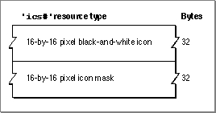

The Small Icon List Resource
A small icon list resource is one of several resources that you provide for an icon
family. A small icon list resource is a resource with the resource type'ics#'. A small icon list resource must be marked purgeable, and it must have the same resource
ID as the icon list resource that represents the file that the small icon list resource
also represents.When the user chooses by Small Icon from the View menu, the Finder displays the
small black-and-white icon specified in this resource in windows if either the user has a black-and-white monitor or the application has not defined any resources for color icons; otherwise, a color version of the icon is displayed. Similarly, the small black-and-white icon or its color version appears in the Application menu after the user launches the application and in the Apple menu if the user places the application or an alias to it in the Apple Menu Items folder.A small icon list resource is defined to be an array of two items of type
String[32]; each bit in the first array represents a pixel in the 16-by-16 pixel icon, and each bit in the second array represents a pixel in the 16-by-16 pixel mask. You can use a high-level tool such as the ResEdit application to create small icon list resources. You can then use the DeRez decompiler to convert your small icon list resources into Rez input when necessary. See "Creating Icons for the Finder" beginning on page 7-10 for information about creating small icon list resources and other resources for representing files to users.A small icon list resource defines one icon, which the Finder uses to display the file it represents. If you examine the compiled version of a small icon list resource, as represented in Figure 7-18, you find that it contains the following elements:
The format for the compiled icon list resource is described on page 7-55; the format
- The 16-by-16 pixel black-and-white icon for display on the desktop.
- The 16-by-16 pixel black icon mask, which shows the area covered by the icon. The Finder uses the mask to crop the icon's outline into whatever background color or pattern is on the desktop. The Finder then draws the black-and-white icon specified
in this resource--or the color icons specified in the small 4-bit color icon resource or the small 8-bit color icon resource--into this shape.
for the compiled small 4-bit color icon resource is described on page 7-58; and the
format for the compiled small 8-bit color icon resource is described on page 7-59.Figure 7-18 Structure of a compiled small icon list (
'ics#')resource